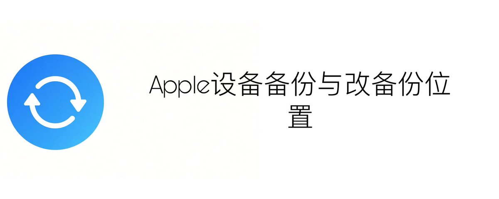
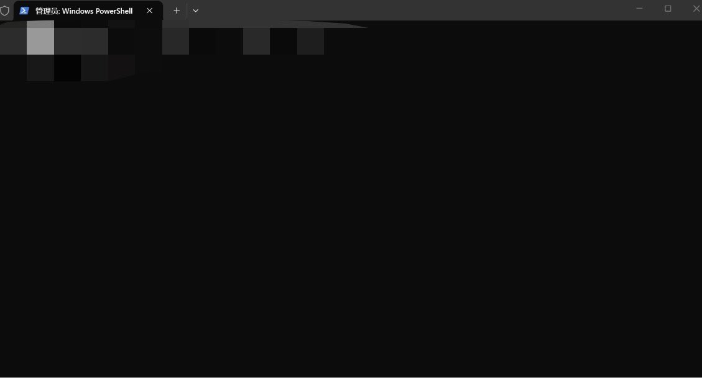
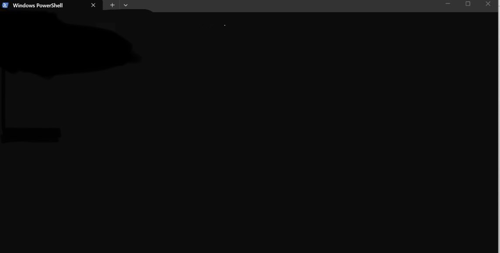
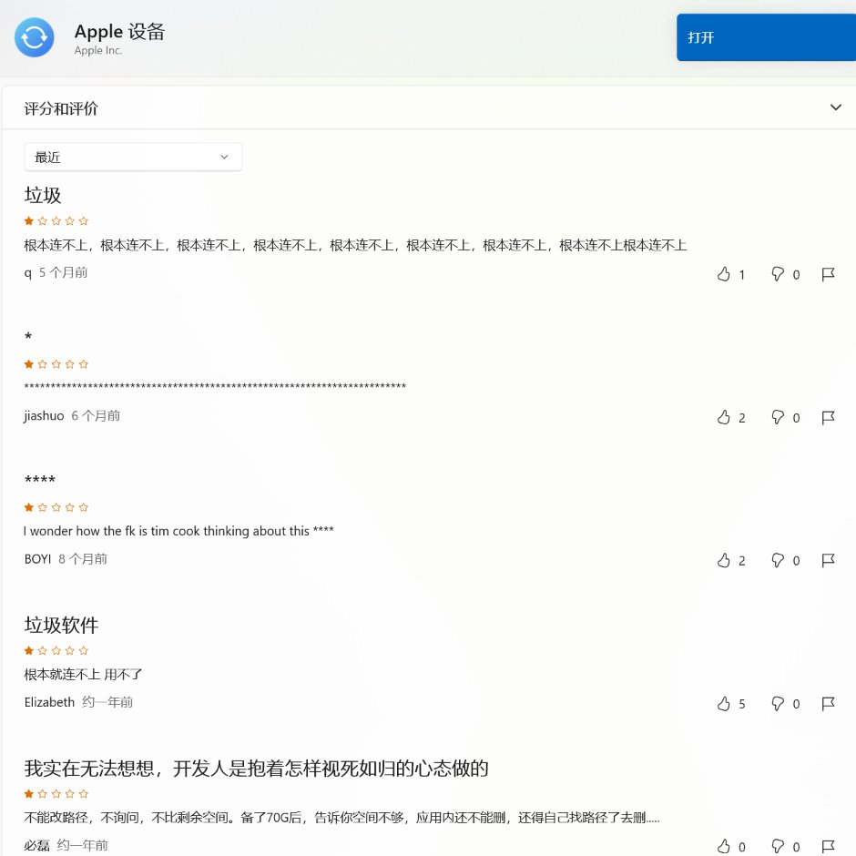
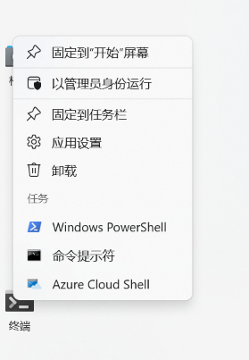
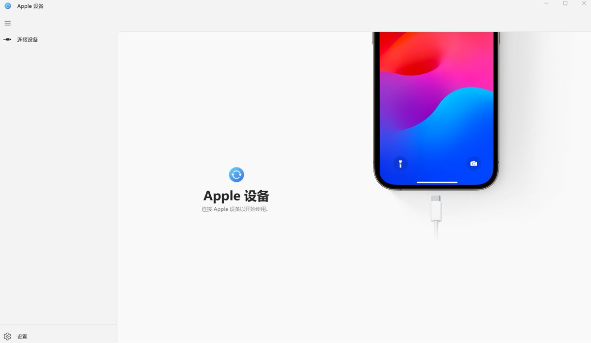
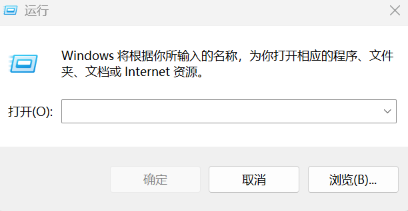
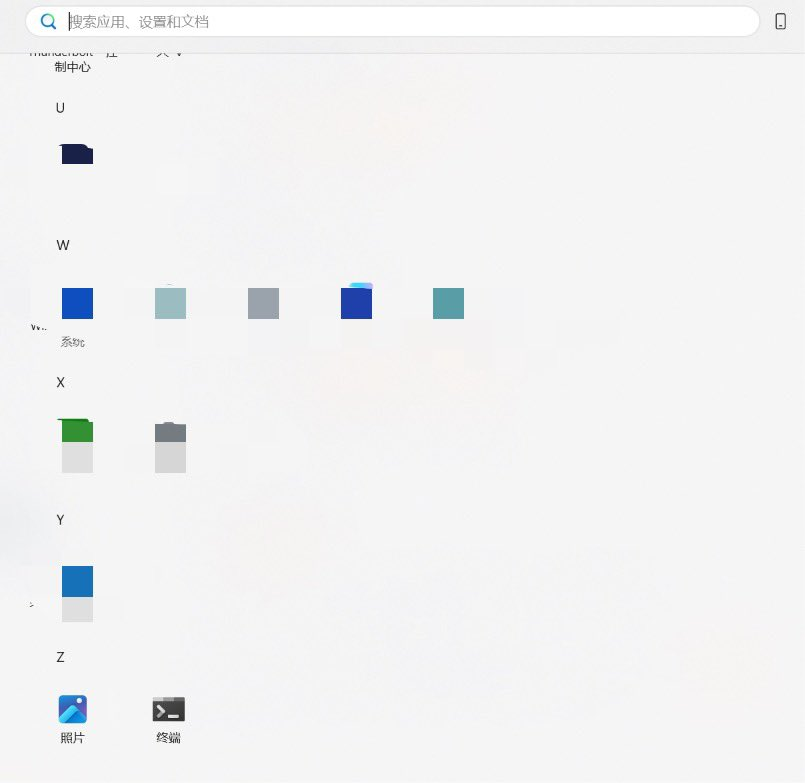
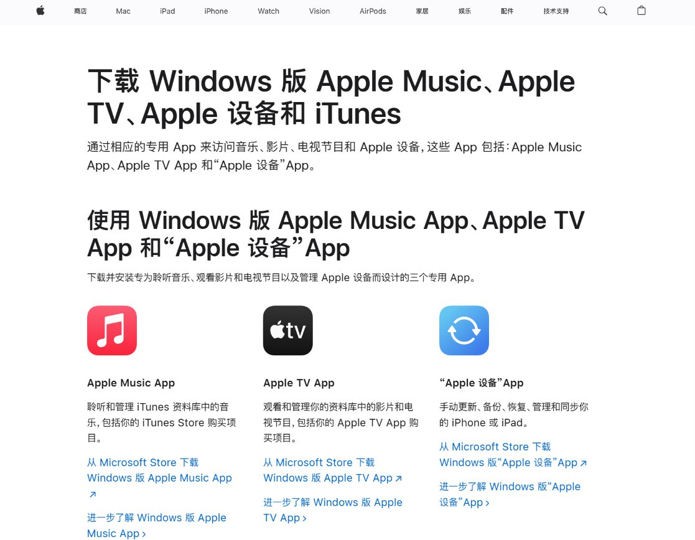
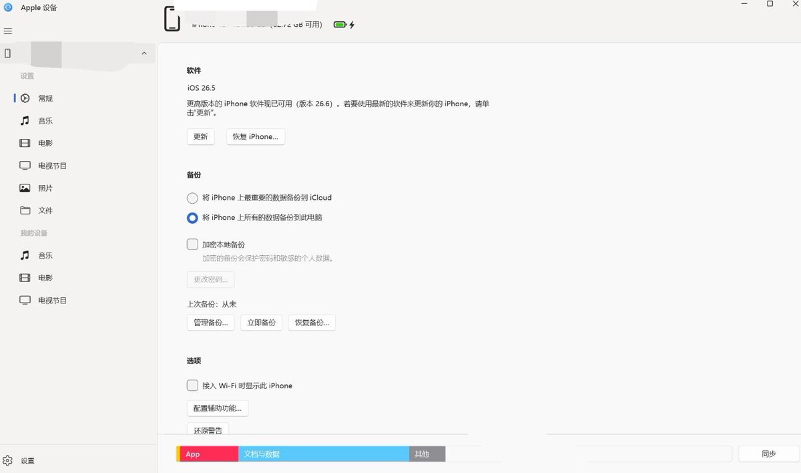

操作系统：Windows11
Apple设备是做什么的
备份iPhone、还原装置，更新 iOS回复系统，同步音乐、电影、照片、档案，查看装置资讯、容量、序号等
怎么下载
只建议在Microsoft Store（微软商店） 下载，不建议从第三方网站下安装包。
下载地址：https://support.apple.com/zh-cn/118290
或在Microsoft Store搜索apple设备
备份前的准备：
准备一根原装或质量好的充电线，知道备份设备的锁屏密码与AppleID密码，最好将备份设备电量充至百分之五十以上，提前在手机里删掉不需要或不想备份的 App 数据、缓存
打开Apple设备
然后将用数据线（或充电线）同时插在手机和电脑接口上，若备份设备第一次接入该电脑，手机上会出现是否信任此电脑的弹窗，输入密码即可
一、关闭Apple 设备 App，在D盘或外置硬盘中新建一个文件夹，并重命名为iPhoneBackup
二、同时按 Win + R，在框中输入
%USERPROFILE\Apple\MobileSync\Backup并点击确定，把里面的 Backup 文件夹剪切到刚刚创建的iPhoneBackup文件夹中
三、点击开始或按windows键，搜索cmd或往下滑到z字母分类找到＂终端＂，鼠标右键单击终端后，选择以管理员身份运行，如果出现＂允许此应用对设备更改吗＂则选择＂是＂
正确的样子如图1，图2是错误的没有以管理员身份运行
四、复制粘贴此段命令：
mklink /J "%USERPROFILE%\Apple\MobileSync\Backup" "D:\iPhoneBackup"
五、如果iPhoneBackup文件夹下还有Backup文件夹则用此段命令
mklink /J "%USERPROFILE%\Apple\MobileSync\Backup" "D:\iPhoneBackup\Backup"
六、如果不是D盘要将位置改为正确位置
七、按下回车（enter）键，出现已创建接合就成功径了
八、点击＂将所有的数据备份到此电脑＂，再点击＂同步＂，点击＂立即备份＂，若手机出现＂是信任的电脑吗＂则输入密码就可以开始备份了
要提醒的是，存储空间不够不会一开始就提醒，一定要保持存储空间足够，不然可能备份到一半或最后一些时才会告诉你存储空间不够备份失败（悲）
饿啊，如有错误请指出，非常感谢，我只是一个普通人，我只有两岁
Apple设备备份与改备份位置
https://t.co/1m9YgJI3D1
Article attached to this post
Apple设备备份与改备份位置









